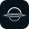
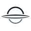
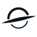
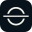
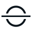

JONÁS ORBIT / DIRECCIÓN DE IDENTIDAD
Una presencia.
Tres horizontes.
La silueta de un agujero negro, reducida a lo esencial. Tres alternativas vectoriales para convivir con el espacio, la cabina y tu trabajo.
Horizonte
La evolución más cercana a tu favicon. Arco superior, sombra abierta y una lámina de luz. Precisa, tranquila y con una silueta claramente reconocible.

16 · 24 · 32 · 48


VERSIÓN EN TINTA
Lente
Una inclinación de doce grados y un arco más firme. Sugiere viaje y dirección; tiene más presencia en tamaños pequeños y una lectura más cinematográfica.



VERSIÓN EN TINTA
Singularidad
El agujero negro convertido en un signo. Dos arcos y un horizonte recto. La opción más abstracta, sobria y cercana a un emblema de instrumentación.

16 · 24 · 32 · 48


VERSIÓN EN TINTAVista previa: Horizonte. Estos botones sólo cambian esta comparación. Horizonte es el logo elegido para la navbar y el favicon. Las otras dos variantes se conservan como referencia del proceso.
Volver a Miller ↗